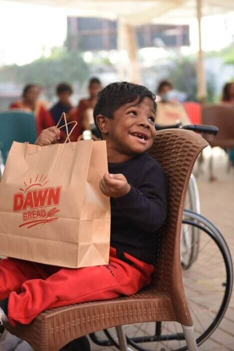

As we are aware of the fact that this Global Pandemic has taken us hundreds of years back, thousands of lives have been lost, and not just this; anxiety, stress and sorrow have been widely spread as a result of it.
In these difficult times, Burger Lab wants to promote happiness to all.
Burger Lab doesn't only provide happiness to its customers but society as a whole. Especially the underprivileged.
Burger Lab has done drives across orphanages and other establishments such as Dar-Ul-Sukoon and SIUT. We will keep promoting our mission and continue working for the welfare of our society.
We realize that our continued growth and success is tied to the happiness and satisfaction of our customers.
Despite having a massive nationwide network of branches, we pay attention to every small detail that matters.
Whenever our customers need help, we strive to provide them with the best and most timely service.